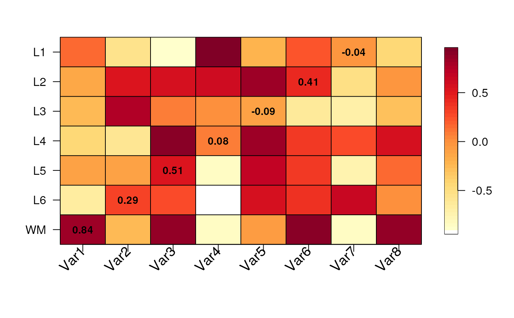

Visualize a matrix of values across human brain layers
Source:R/layer_matrix_plot.R
layer_matrix_plot.RdThis function visualizes a numerical matrix where the Y-axis represents
the human brain layers and can be adjusted to represent the length of
each brain layer. Cells can optionally have text values. This function is
used by gene_set_enrichment_plot() and layer_stat_cor_plot().
layer_matrix_plot( matrix_values, matrix_labels = NULL, xlabs = NULL, layerHeights = NULL, mypal = c("white", (grDevices::colorRampPalette(RColorBrewer::brewer.pal(9, "YlOrRd")))(50)), breaks = NULL, axis.args = NULL, srt = 45, mar = c(8, 4, 4, 2) + 0.1, cex = 1.2 )
Arguments
| matrix_values | A |
|---|---|
| matrix_labels | Optionally a character |
| xlabs | A vector of names in the same order and length as
|
| layerHeights | A |
| mypal | A vector with the color palette to use. |
| breaks | Passed to |
| axis.args | Passed to |
| srt | The angle for the x-axis labels. Used by |
| mar | Passed to |
| cex | Used for the x-axis labels and the text inside the cells. |
Value
A base R plot visualizing the input matrix_values with optional
text labels for matrix_labels.
Examples
## Create some random data set.seed(20200224) mat <- matrix(runif(7 * 8, min = -1), nrow = 7) rownames(mat) <- c("WM", paste0("L", rev(seq_len(6)))) colnames(mat) <- paste0("Var", seq_len(8)) ## Create some text labels mat_text <- matrix("", nrow = 7, ncol = 8, dimnames = dimnames(mat)) diag(mat_text) <- as.character(round(diag(mat), 2)) ## Make the plot layer_matrix_plot(mat, mat_text)## Try to re-create the anatomical proportions of the human brain layers layer_matrix_plot( mat, mat_text, layerHeights = c(0, 40, 55, 75, 85, 110, 120, 135), cex = 2 )